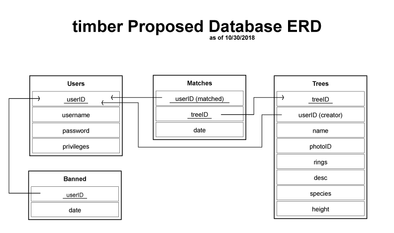

Introduction
In the old days, trees were plentiful and tree-hugging was easy.
Tree-huggers across the world could easily find stately pines, thick oaks, and graceful willows near their houses and workplaces.
Now, in the information age, the ratio of trees to humans has plummeted. Now, tree-huggers everywhere feel isolated, as the pace of modern life
prevents them from seeking out the feel of coarse bark, the caress of branches across their backs. Here at Timber, we believe a modern problem
requires a modern solution. Our clients need to be able to find trees that suit their preferences, wherever they are. In order to fill this need,
we will need to create a database of trees. Since our noble coniferous and deciduous brethern cannot as yet access the internet for
themselves, we will establish a user-curated database of trees. Users will be able to submit trees and then find suitable matches
among the trees submitted by other users.
Use Cases
- Use Case 1 (Adam): Patrons can create a user with a username and password, both of which are encrypted within our database. Users can change their passwords. Users are either ''general'' or ''admin'' users, either for standard interaction with the site or administrative management.
- Use Case 2 (David): General users should be able to create a tree with characteristics such as: name, number of rings, photo, description, species, height, etc.
- Use Case 3 (Sara): General users should be able to update information about trees that they have created.
- Use Case 4 (Adam): General users should be able to delete trees that they have created.
- Use Case 5 (David): Administrative users should be able to delete or update the information of any user or any tree created by any user.
- Use Case 6 (Sara): Administrative users should be able to view a list of all users or all trees and should be able to search for users or trees satisfying any relevant set of parameters.
- Use Case 7 (David): Administrative users should be able to temporarily ban a user for an arbitrary amount of time. Banned users will be unable to login until a certain amount of time has passed.
- Use Case 8 (Sara): General users can access a page that displays a random tree that the user has not already matched with. Users can select from two options to match or dismiss a tree that they see on the random tree page.
- Use Case 9 (Adam): Users can view a profile page that includes the trees they have matched with.
Project Management Plan
Gantt Chart
Meeting times will be decided on a weekly basis to allow for flexibility in our schedules and plans
Proposed Relational Database Schema
